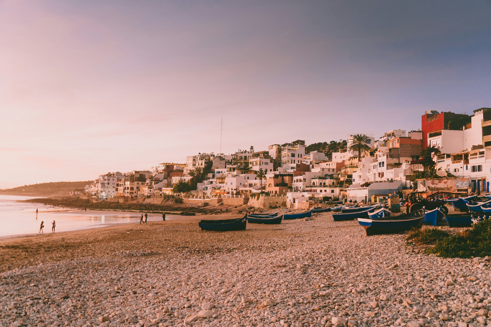
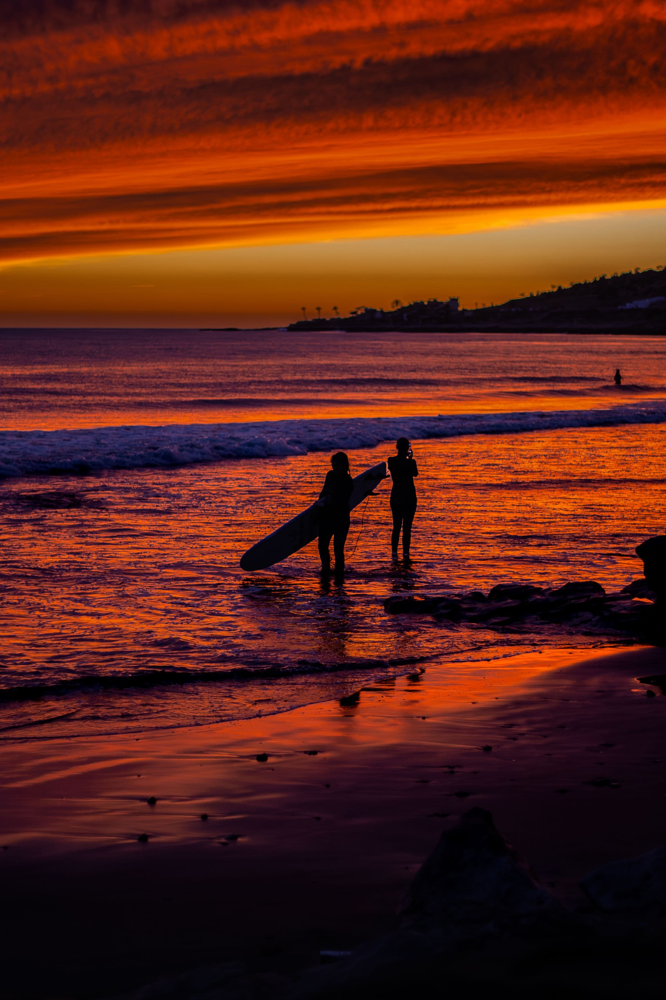

Your local guide to Morocco's easygoing Atlantic surf village
Everything we recommend to guests staying on the coast, from first surf lessons to sunset camel rides and quad tours through the argan forest.
Half of our family's story happens in the desert, and the other half happens here, on this stretch of Atlantic coast just north of Agadir. Taghazout was a quiet fishing village long before the surfboards arrived, and somehow it has kept that unhurried rhythm even as travelers from all over the world discovered its waves. Guests often arrive planning to spend two nights and end up staying a week, which tells you most of what you need to know. This guide covers the things to do in Taghazout that we actually recommend to our own guests, based on years of arranging these days out ourselves.
Taghazout is small enough to walk end to end in about fifteen minutes, and that scale is exactly the point. Blue and white houses stack up the hillside above the beach, fishing boats still pull in beside the surf schools, and the cafés fill with a mix of Moroccan families, long-stay surfers, and travelers who found the place by accident. Nothing here feels staged for visitors, which is increasingly rare on any coastline. We have watched the village grow for years, and the thing that keeps surprising us is how little its character has changed.
What makes surfing Taghazout so unusual is the sheer variety packed into a few kilometers of coast. Beginners get gentle, forgiving beach breaks with sandy bottoms, while more experienced surfers have world-class right-hand point breaks within a short drive. Because the coastline faces different angles, there is almost always somewhere working, whatever the swell is doing that morning. That reliability is why surf schools cluster here rather than further along the coast.
Turn inland from the coast road and the landscape changes within minutes into dry hills covered in argan trees, a species that grows almost nowhere else on earth. This is where the quad tours and horse trails run, past women's cooperatives pressing argan oil by hand and small Berber villages where goats genuinely do climb the trees. Most visitors never leave the beach, which means those inland tracks stay quiet even in high season. It is our favorite half of Taghazout, and the half almost nobody photographs.

Pro Tip: Book your surf lesson for the morning and your camel ride or quad tour for late afternoon. The wind on this coast typically picks up after midday, which makes the waves messier but has no effect at all on the beach and inland activities, so you get the best conditions for both in a single day.
Taghazout is one of the easiest places in Morocco to visit year-round, because the Atlantic keeps the temperature remarkably steady. Winter days, from December to February, usually sit between 18°C and 22°C (64°F to 72°F) and are often sunny, while summer rarely becomes uncomfortable, generally holding around 24°C to 28°C (75°F to 82°F) thanks to the ocean breeze. Compare that with Marrakech, three hours inland, where summer regularly passes 40°C, and you understand why so many Moroccan families come here in August.
For surfing specifically, the seasons matter more than the thermometer. September through April brings the bigger, more consistent Atlantic swells that experienced surfers travel here for, with the peak months usually falling between November and February. May through August delivers smaller, softer waves, which is genuinely better if you are taking your first lesson. The water sits around 16°C to 18°C in winter and 20°C to 22°C in summer, so a wetsuit is standard year-round and always included when you book a lesson with us.

If you only do one thing here, make it this. A private lesson runs roughly two hours and includes board, wetsuit, and an instructor who adjusts the session to whatever level you arrive at, whether that means standing up for the very first time or finally fixing your bottom turn. Beginners start in whitewater on a soft-top board where falling off is genuinely part of the fun. Most of our guests are riding waves on their own by the end of the second session, which surprises almost all of them.
Camel rides near Agadir and Taghazout are a completely different experience from the desert treks we run in Merzouga, and we love them for their own reasons. Here you ride along wide, flat beaches with the Atlantic breaking beside you and the sun dropping into the water ahead, usually for an hour or so in the late afternoon. It is slow, gentle, and suitable for children and complete beginners, and it is the single most photographed thing our guests do on the coast. Given our name, you will understand why we take particular care over which animals we work with.

Quad biking in Morocco tends to conjure images of the Sahara, but the terrain behind Taghazout is arguably more interesting to ride: coastal sand dunes, dry riverbeds, rocky tracks, and shaded argan groves, often all within the same two-hour circuit. No licence or previous experience is needed, a short briefing covers everything, and the guides set the pace to match the group rather than the other way round. Wear clothes you do not mind getting dusty, because you absolutely will.
For anyone who prefers hooves to engines, a two-hour guided ride takes you through soft coastal dunes, along the beach, and out onto the Souss river trails, finishing with the traditional glass of mint tea. All skill levels are welcome, and the horses are well matched to riders, so nervous first-timers are put on the calmest animals. Hotel pickup from Taghazout and Agadir is included, which removes the only genuinely awkward part of arranging it yourself.

About an hour inland from the coast, Paradise Valley is a gorge of turquoise natural pools carved into pink rock and shaded by palm groves, and it is the perfect counterweight to a week of salt water and sun. A typical half-day trip includes swimming in the pools, a stop at an argan oil cooperative, and mint tea in a botanical garden on the way back. It is easily the excursion our Taghazout guests ask about most, and it works beautifully as a rest day between surf sessions.
This one costs nothing and is somehow still the thing people describe when they get home. Taghazout faces due west, so every clear evening the entire village turns orange and half of it drifts up to the rooftops with a coffee or a fresh juice to watch. Surfers stay out in the water until the light goes completely. Find a terrace above the main beach around forty minutes before sunset, order something, and do absolutely nothing for an hour.

Pro Tip: Do not buy a wetsuit or board before you arrive. Every surf lesson we arrange includes both, and rental in the village is inexpensive and easy, so your luggage is far better spent on other things. The one item genuinely worth bringing is your own pair of well-fitting sunglasses with a strap.
Yes, it is one of the best places in Morocco to learn. The beaches around the village have sandy bottoms and gentle whitewater sections designed by nature for exactly this, and the surf schools here teach beginners every single day of the year. Summer, from roughly May to August, has the smallest and friendliest waves, so if you are nervous, that is the season to come.
Taghazout sits about 20 kilometers north of Agadir, which is a straightforward 25 to 30 minute drive along the coast road. From Agadir Al Massira Airport the journey is longer, usually somewhere between 45 minutes and an hour depending on traffic. We arrange private airport transfers for guests staying in Taghazout, so you are met at arrivals rather than negotiating with taxis after a flight.
It depends on the activity, the group size, and whether you want a private or shared session, and prices also shift a little with the season. Rather than quote a number that may not match what you actually want, we prefer to build you an exact price once we know your dates and how many of you there are. Send us a message and we will come back quickly with a clear, all-inclusive quote.
For most of the year you can arrange things a day ahead without any trouble, and we are happy to organize something at short notice. During the busiest periods, roughly Christmas and New Year, Easter, and August, private lessons and sunset camel rides do fill up, so a few days' notice helps. If you already know which dates you want, telling us early simply means you get the time slot you prefer rather than whatever is left.
Both, genuinely. The village is small, walkable, and used to international visitors, and the beach activities scale easily for children, camel rides and beginner surf lessons in particular. Solo travelers tend to find the surf-camp culture makes meeting people almost automatic. As anywhere, normal common sense applies after dark, but Taghazout is a relaxed and welcoming place and we send guests of every age and configuration here without hesitation.
Yes, and it is one of our favorite itineraries to build because the contrast is so complete. A typical combination gives you a few days of surf and coast here, then a multi-day route inland to the Sahara at Merzouga, with a camel trek and a night in a desert camp before returning. Because our family has roots on both the coast and in the dunes, we handle the whole journey ourselves rather than handing you between operators. Tell us how many days you have and we will shape it around them.
What we love about Taghazout is that it asks very little of you. There is no checklist of monuments to work through and no pressure to fill every hour, just good waves, long beaches, quiet inland trails, and a village that is happy to let you find your own pace. Whether you want to stand on a surfboard for the first time, watch the sun go down from a camel's back, or ride a quad through the argan hills, we can arrange all of it and get you there and back. Get in touch and tell us what sounds good, and we will build your days on the coast around it.
Ready to plan your own Morocco trip?
Contact Us